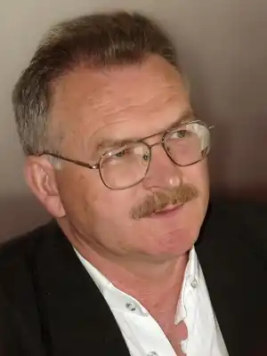

(1 січня 1956, село Гнатівці Хмельницького району) — український письменник. Член Національної спілки письменників України (від 1984 року).Відповідальний секретар Хмельницької обласної організації Національної спілки журналістів України. Автор збірок оповідань "Ясен-дерево", "Золотікораблі", "Бігликоні", "Де починається Гольфстрім", "Ласощі для білочки", "Тенета 30-х".
Біографія
Народився в сім’ї колгоспника. Закінчив 1973 року середню школу в рідномуселі, навчався в Чорноострівському СПТУ, у 1974—1976 роках служив у армії. Працював токарем на Хмельницькому заводі тракторних агрегатів, завідувачем сільської бібліотеки. Закінчив 1981 року філологічний факультет Кам’янець-Подільського педагогічного інституту (нині Кам’янець-Подільський національний університет). Працював у газетах "Прапор Жовтня" (Кам’янець-Подільський), "Корчагінець" (згодом "Ровесник", Хмельницький), був редактором останньої (1990—2000). Нинівідповідальний секретар Хмельницької обласної організації Національної спілки журналістів України. Творчість Видав збірки оповідань "Ясен-дерево" (1983), "Золотікораблі" (1986), повість "Бігликоні" (1996). Книги останнього десятиріччя: "Де починається Гольфстрім", "Ласощі для білочки", "Тенета 30-х". Лауреат Хмельницької міської премії імені Богдана Хмельницького, обласної премії імені Микити Годованця. Дипломант (другемісце) Всеукраїнського конкурсу на краще оповідання "Що записано в книгу життя" (2003).